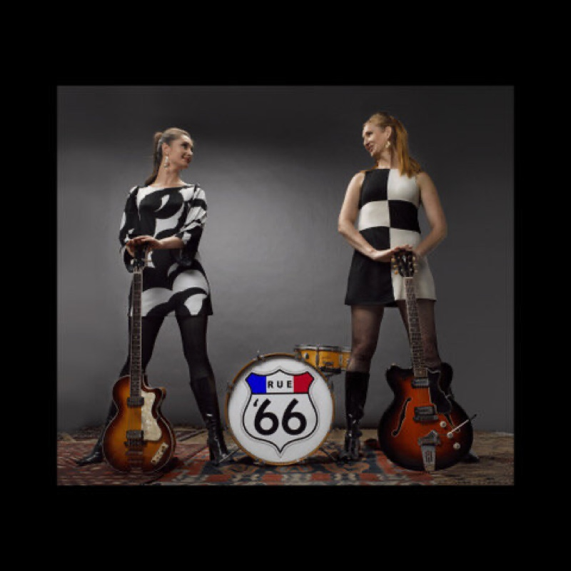

Partie de Dames
Four songs, in the French tradition of the sixties EP — and a tribute to Serge Martial. Three tracks cut at the historic Hyde Street Studios, one captured live; mixed in mono by Chris Von Sneidern at Tape Vault, San Francisco.
- Partie de DamesLiz Brady, 1967
- Ne Me Laisse Pas L’AimerBrigitte Bardot
- Mini JupeLes Sharks
- My Girl JosephineFats Domino, after Jerry Jaye’s 1967 reading